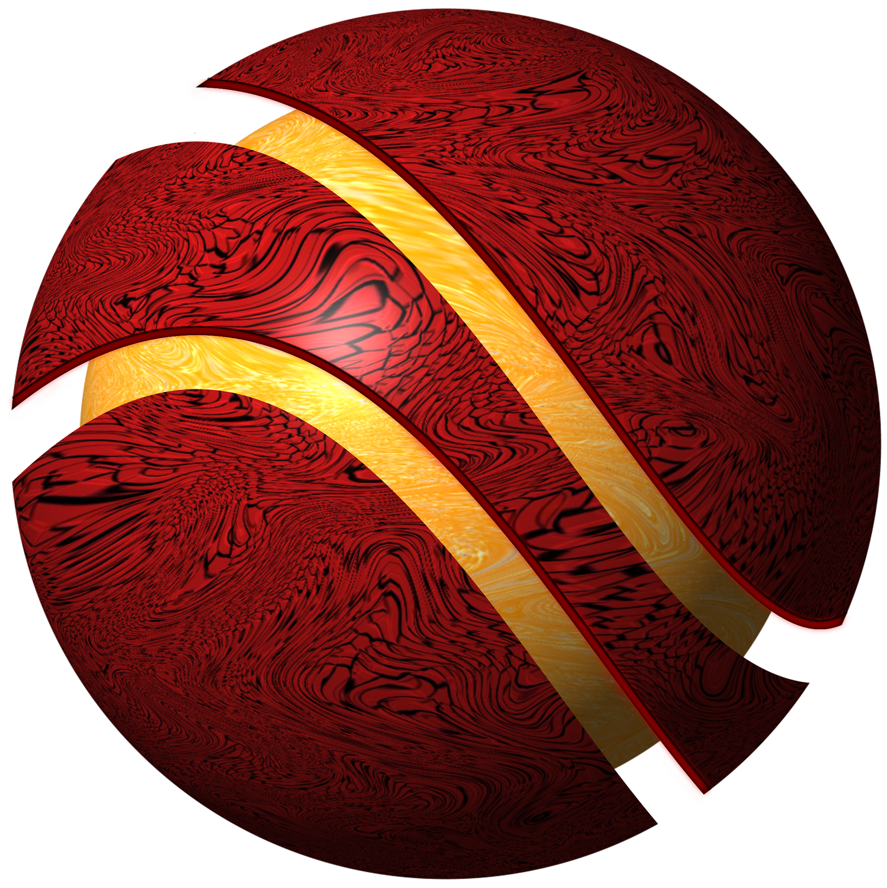

8,5
JavaScript · POO
Nota Aluno POO
Aplicação para cadastrar alunos, calcular médias e acompanhar o resultado final de cada avaliação.
Abrir projeto
webProPortfólio pessoal
Ideias em movimento
Bem-vindo ao webPro, um espaço para transformar ideias em experiências para a web. Aqui você acompanha projetos, experimentos e aprendizados construídos ao longo do caminho.
Conheça o caminhoPróximo capítulo
Experimentos que transformam conceitos de programação em ferramentas simples e úteis.
JavaScript · POO
Aplicação para cadastrar alunos, calcular médias e acompanhar o resultado final de cada avaliação.
Abrir projetoJavaScript · Finanças
Painel para organizar despesas pessoais, acompanhar valores e visualizar melhor o orçamento do dia a dia.
Abrir projetoSobre o webPro
Este site acompanha uma jornada de desenvolvimento feita de pequenos experimentos, desafios reais e novas possibilidades.